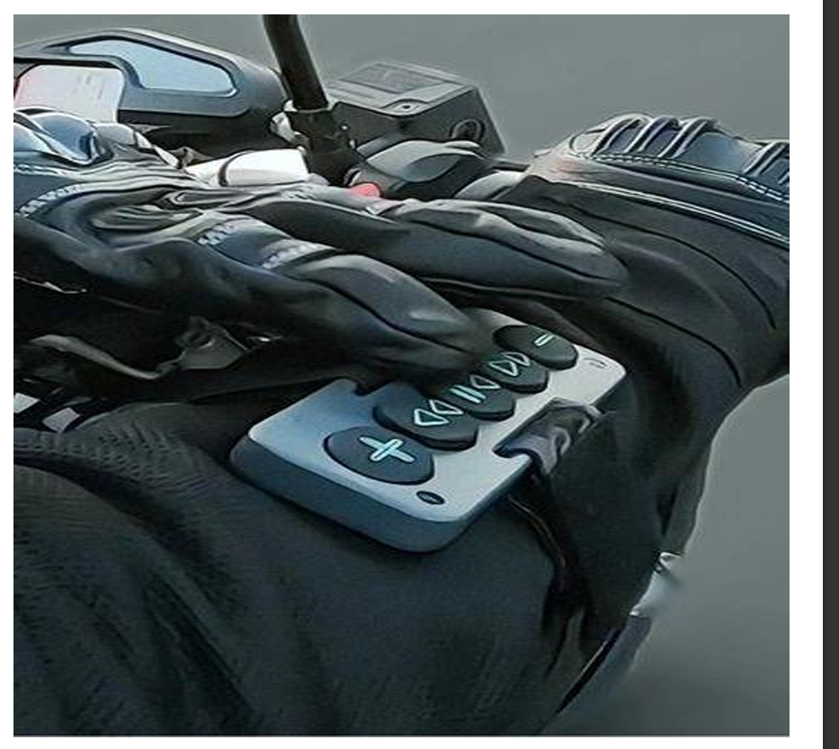

Built for Adventure | Seamless Control with Gloves On
Meet Chubby Buttons 2.0, the ultimate Bluetooth remote that seamlessly blends practicality with adventure. This innovative device has been designed with outdoor enthusiasts in mind, offering enhanced functionality that keeps up with the most rugged activities. Whether you’re snowboarding down a challenging slope, cycling on a mountain trail, or hiking through dense forests, Chubby Buttons 2.0 allows you to maintain control of your devices without missing a beat.
Upgraded for Performance
Chubby Buttons 2.0 is an evolution of its predecessor, boasting an improved, rugged design that stands up to the demands of outdoor sports. Unlike traditional Bluetooth remotes that struggle in extreme conditions, this remote is water-resistant and shockproof, making it a reliable companion regardless of the environment. Its durable construction ensures that it can handle drops, splashes, and impact without losing functionality.
Enhanced Glove-Friendly Design
One of the most significant challenges for outdoor adventurers is managing their devices while wearing thick gloves. This is where Chubby Buttons 2.0 shines. Its oversized buttons are strategically designed to be responsive and easy to press, even with heavily insulated gloves on. This feature allows users to play or pause music, skip tracks, and adjust the volume without removing their gloves, making it ideal for winter sports like skiing and snowboarding.
Easy to Use and Install
Chubby Buttons 2.0 is designed for ease of use. The setup is straightforward, allowing users to pair the remote with their Bluetooth-enabled devices in seconds. The remote can be attached securely to jackets, backpacks, handlebars, or other gear using its versatile strap. This ensures that it stays in place during intense activities and is easily accessible when needed.
Water-Resistant and Shockproof for Outdoor Adventures
Adventurers know that weather conditions can be unpredictable. Rain, snow, and splashes are all part of the outdoor experience, which is why Chubby Buttons 2.0 is built with water-resistant materials that safeguard it against moisture. This feature ensures that even if you get caught in the rain or take a fall into the snow, your remote will continue to perform without a hitch.
Enhanced Compatibility
Chubby Buttons 2.0 works with a wide range of devices, from smartphones and tablets to music players and smartwatches. This broad compatibility ensures that no matter what tech you rely on during your activities, Chubby Buttons 2.0 can integrate seamlessly with it. The device connects easily via Bluetooth and maintains a stable connection, even in environments where signal interference is common.
Long Battery Life for Extended Adventures
Battery life is always a concern for outdoor tech users, but Chubby Buttons 2.0 alleviates this worry with a long-lasting battery that can handle extended use. Whether you’re out for a day-long hike or an entire weekend of camping, the device’s battery will keep you connected for the duration of your adventure.
Real-Life Applications
The versatility of Chubby Buttons 2.0 makes it suitable for various outdoor activities. For winter sports enthusiasts, it means uninterrupted control while skiing, snowboarding, or sledding. Cyclists appreciate the convenience of being able to change their playlists without stopping their ride or taking their eyes off the road. Hikers and climbers find the device particularly useful for managing their music and calls without disrupting their focus or risking their safety.
User Testimonials
"I use my Chubby Buttons 2.0 on long cycling trips, and it’s a lifesaver. I can switch songs and adjust volume without taking my hands off the handlebars, which keeps me safe and lets me stay in the groove." — A Cyclist
"I can’t imagine my winter hikes without Chubby Buttons 2.0. It’s so convenient to change my playlist or answer a call without stopping or exposing my hands to the cold." — A Hiker
"Knowing I can make adjustments to my music without risking a fall or losing my gloves is a game changer. Chubby Buttons 2.0 has become an essential part of my gear." — A Snowboarder
A Must-Have for Outdoor Enthusiasts
Chubby Buttons 2.0 isn’t just an accessory—it’s a reliable partner that enhances every outdoor activity. Its glove-friendly design, water-resistant build, and shockproof durability make it a standout product in the realm of outdoor tech. For those who value safety, convenience, and uninterrupted enjoyment during their adventures, Chubby Buttons 2.0 is the perfect solution.
Conclusion
Whether you’re shredding down a mountain, cycling through scenic trails, or trekking up a challenging path, Chubby Buttons 2.0 is there to make sure you stay connected and in control. This Bluetooth remote offers unmatched practicality with its rugged design, intuitive operation, and enhanced compatibility. Don’t let your gear hold you back; let Chubby Buttons 2.0 empower your adventures and keep you connected when it matters most.